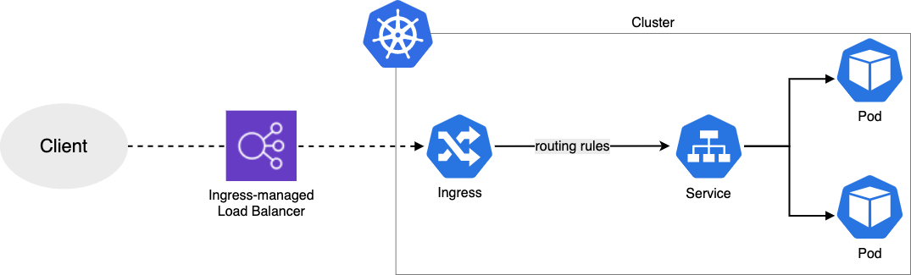
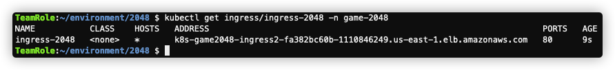
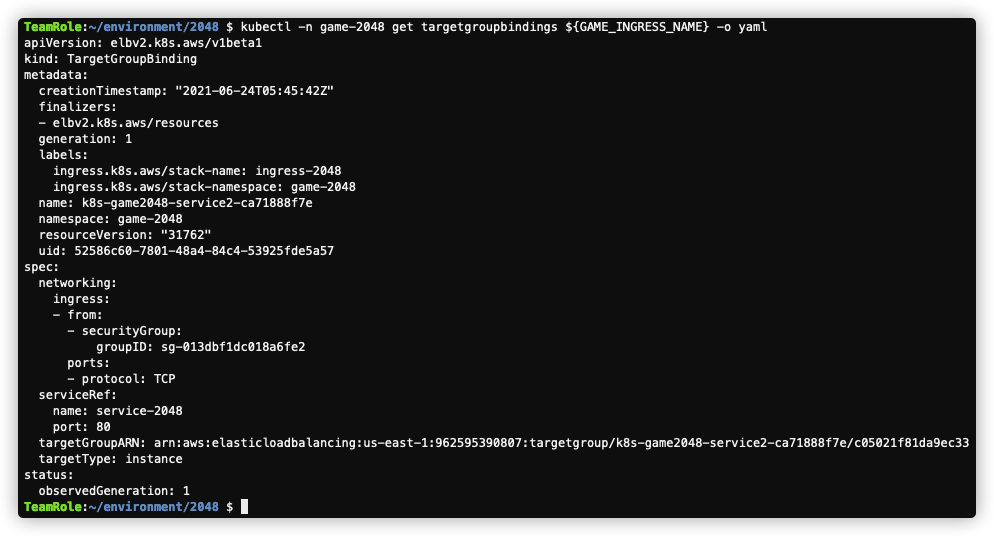
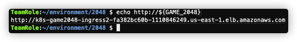
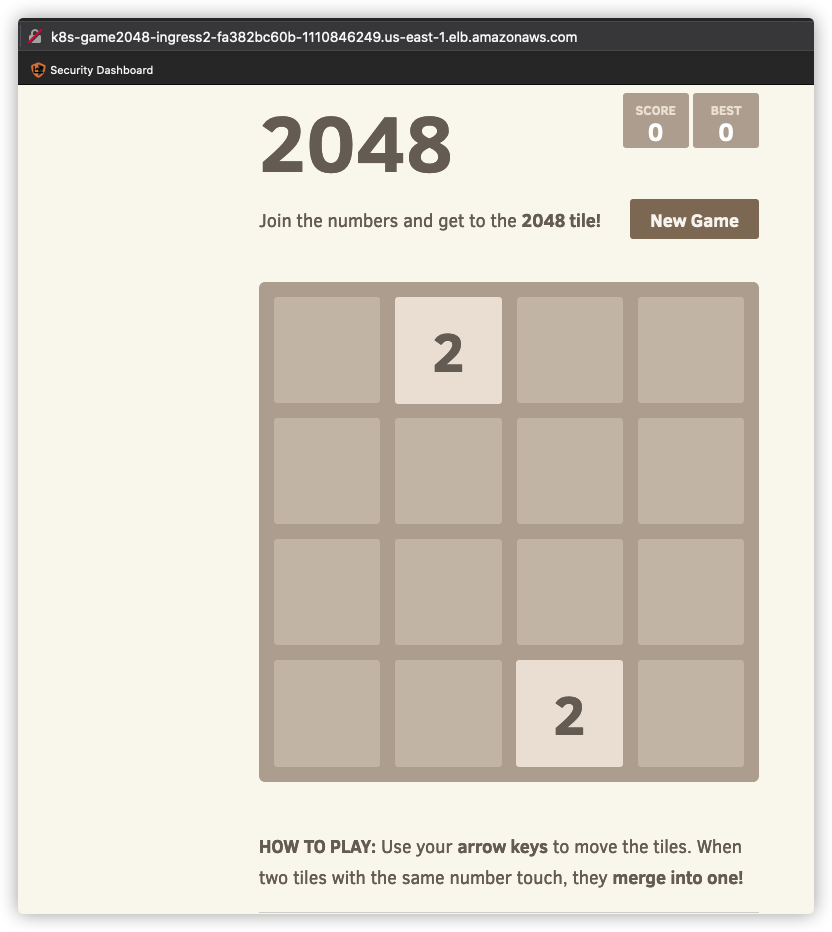

本章节我们演示如何通过Ingress暴露服务给外部终端用户访问。
Ingress 是控制前端路由进来到服务的组件。不同于其他的 kube-controller-manager 控制器，Ingress Controller 非系统自带，不会自动安装启动，需要自行安装配置。

在EKS里面，默认的 Ingress 是 AWS Load Balancer Controller 更多细节见这里
AWS ALB Ingress Controller 已经更名为 AWS Load Balancer Controller.
针对不同的服务类型，选用不同的组件
ALB 目前支持的功能:
参考 https://kubernetes-sigs.github.io/aws-load-balancer-controller/v2.2/deploy/installation/
helm version --short
此处我们使用 helm 来安装和配置 ALB Controller，如果还没安装 helm，请参考 002-准备管理环境
eksctl utils associate-iam-oidc-provider \
--region=$AWS_REGION \
--cluster=ekslab \
--approve
更多信息参考Amazon EKS 文档 IAM Roles for Service Accounts
curl -o lbc_iam_policy.json https://raw.githubusercontent.com/kubernetes-sigs/aws-load-balancer-controller/main/docs/install/iam_policy.json
aws iam create-policy \
--policy-name AWSLoadBalancerControllerIAMPolicy \
--policy-document file://lbc_iam_policy.json
eksctl create iamserviceaccount \
--cluster=ekslab \
--namespace=kube-system \
--name=aws-load-balancer-controller \
--attach-policy-arn=arn:aws:iam::${ACCOUNT_ID}:policy/AWSLoadBalancerControllerIAMPolicy \
--override-existing-serviceaccounts \
--approve
kubectl apply -k "github.com/aws/eks-charts/stable/aws-load-balancer-controller//crds?ref=master"
kubectl get crd
helm repo add eks https://aws.github.io/eks-charts
helm upgrade -i aws-load-balancer-controller \
eks/aws-load-balancer-controller \
-n kube-system \
--set clusterName=ekslab \
--set serviceAccount.create=false \
--set serviceAccount.name=aws-load-balancer-controller
kubectl -n kube-system rollout status deployment aws-load-balancer-controller
上面命令默认安装的是最新版本，如果需要安装指定版本，可以通过 helm search aws-load-balancer-controller 命令搜索可用版本
下面部署示例应用 2048 game
mkdir ${HOME}/environment/2048
cd ${HOME}/environment/2048
cat > 2048_application.yaml <<EOF
---
apiVersion: v1
kind: Namespace
metadata:
name: game-2048
---
apiVersion: apps/v1
kind: Deployment
metadata:
namespace: game-2048
name: deployment-2048
spec:
selector:
matchLabels:
app.kubernetes.io/name: app-2048
replicas: 5
template:
metadata:
labels:
app.kubernetes.io/name: app-2048
spec:
containers:
- image: alexwhen/docker-2048
imagePullPolicy: Always
name: app-2048
ports:
- containerPort: 80
---
apiVersion: v1
kind: Service
metadata:
namespace: game-2048
name: service-2048
spec:
ports:
- port: 80
targetPort: 80
protocol: TCP
type: NodePort
selector:
app.kubernetes.io/name: app-2048
EOF
cat > 2048_ingress.yaml <<EOF
apiVersion: networking.k8s.io/v1
kind: Ingress
metadata:
namespace: game-2048
name: ingress-2048
annotations:
kubernetes.io/ingress.class: alb
alb.ingress.kubernetes.io/scheme: internet-facing
alb.ingress.kubernetes.io/target-type: instance
spec:
rules:
- http:
paths:
- path: /
pathType: Prefix
backend:
service:
name: service-2048
port:
number: 80
EOF
kubectl apply -f .
kubectl get ingress/ingress-2048 -n game-2048
ALB 部署可用需要等待约2-3分钟
结果类似下图： 
export GAME_INGRESS_NAME=$(kubectl -n game-2048 get targetgroupbindings -o jsonpath='{.items[].metadata.name}')
kubectl -n game-2048 get targetgroupbindings ${GAME_INGRESS_NAME} -o yaml

export GAME_2048=$(kubectl get ingress/ingress-2048 -n game-2048 -o jsonpath='{.status.loadBalancer.ingress[0].hostname}')
echo http://${GAME_2048}

